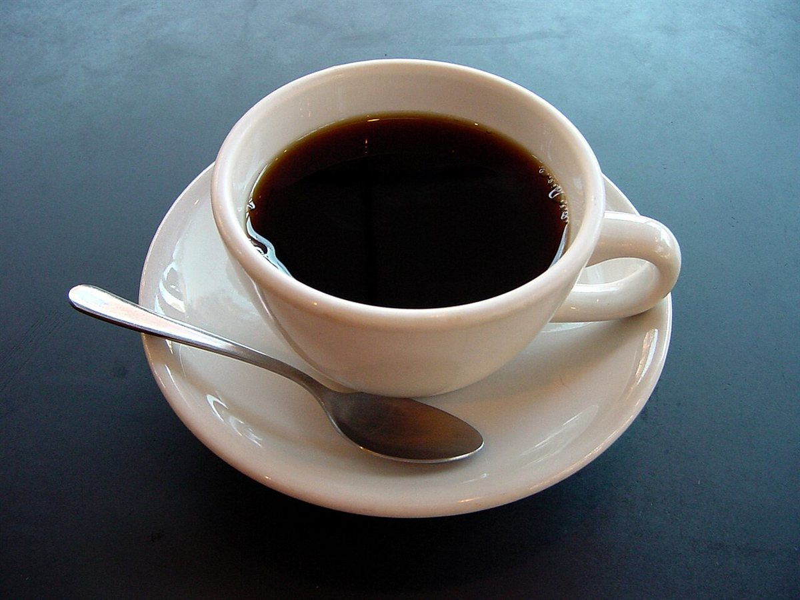
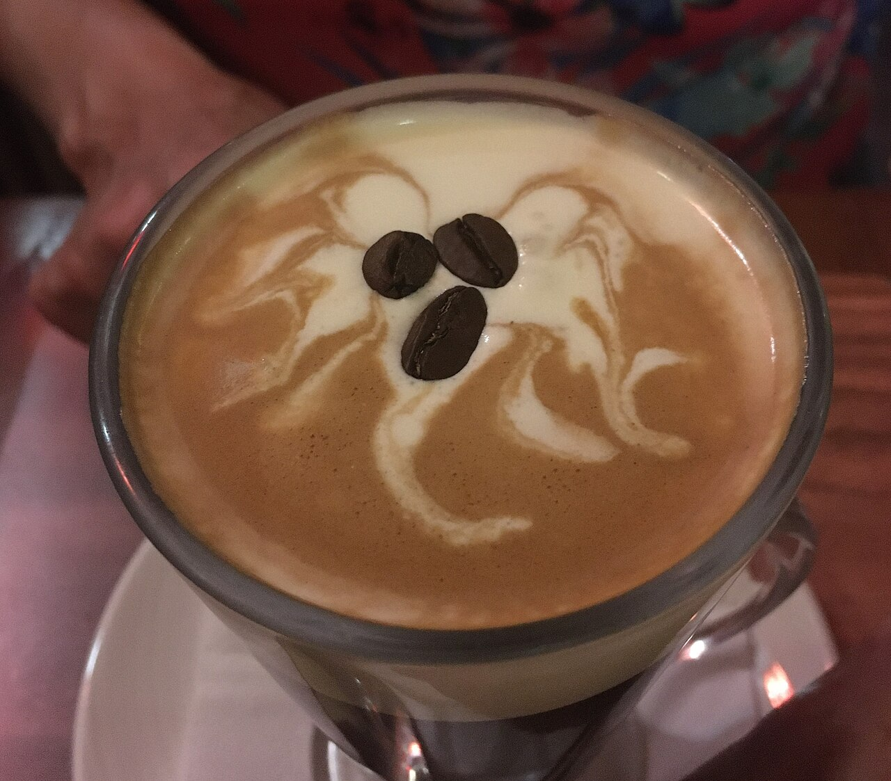
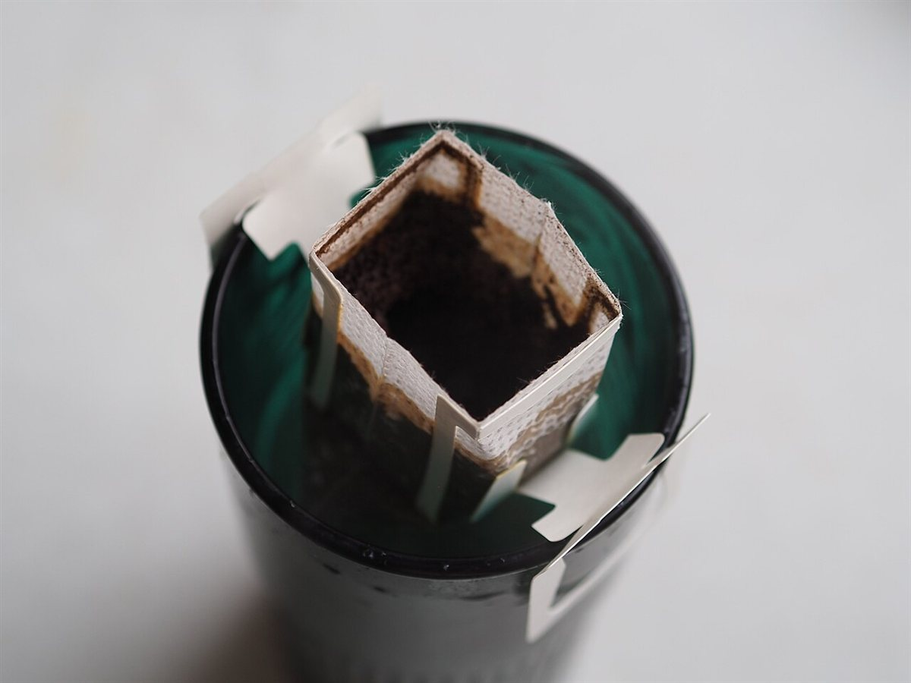

イメージ例
ひとりで過ごす時間に、ちょうどいいカフェだと思いました。コーヒーの香りに包まれて、気持ちがゆっくりほどけていきます。

以下は実際のお客様の声ではなく、イメージとして作成した例文です。
ひとりで過ごす時間に、ちょうどいいカフェだと思いました。コーヒーの香りに包まれて、気持ちがゆっくりほどけていきます。

友人とおしゃべりをしながら、のんびり過ごせました。落ち着いた雰囲気で、時間を忘れてつい長居してしまいそうです。

帰り道に立ち寄って、ひと息つきました。温かい一杯で、一日の疲れがすっと軽くなった気がします。また寄りたくなります。

実際の口コミは、Googleマップ・Instagramでご確認ください。
掲載の写真はイメージです。当店の写真ではありません。